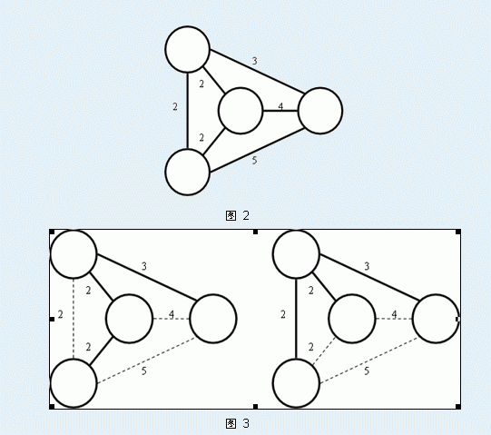
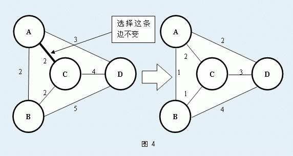

输入文件的第一行有3个正整数n、m、Lab分别表示无向图中的点数、边数、必须要在最小生成树中出现的AB边的标号。
接下来m行依次描述标号为1,2,3…m的无向边，每行描述一条边。每个描述包含3个整数x、y、d，表示这条边连接着标号为x、y的点，且这条边的权值为d。
输入文件保证1<=x,y<=N,x不等于y,且输入数据保证这个无向图一定是一个连通图。

当然啦，这些都不是今天需要你解决的问题。Secsa想知道对于某一条无向图中的边AB，至少需要多少代价可以保证AB边在这个无向图的最小生成树中。为了使得AB边一定在最小生成树中，你可以对这个无向图进行操作，一次单独的操作是指：先选择一条图中的边

输出文件只有一行，这行只有一个整数，即，使得标号为Lab边一定出现最小生成树中的最少操作次数。
4 6 1
1 2 2
1 3 2
1 4 3
2 3 2
2 4 4
3 4 5
1第1个样例就是问题描述中的例子。
1<=n<=500,1<=M<=800,1<=D<10^6